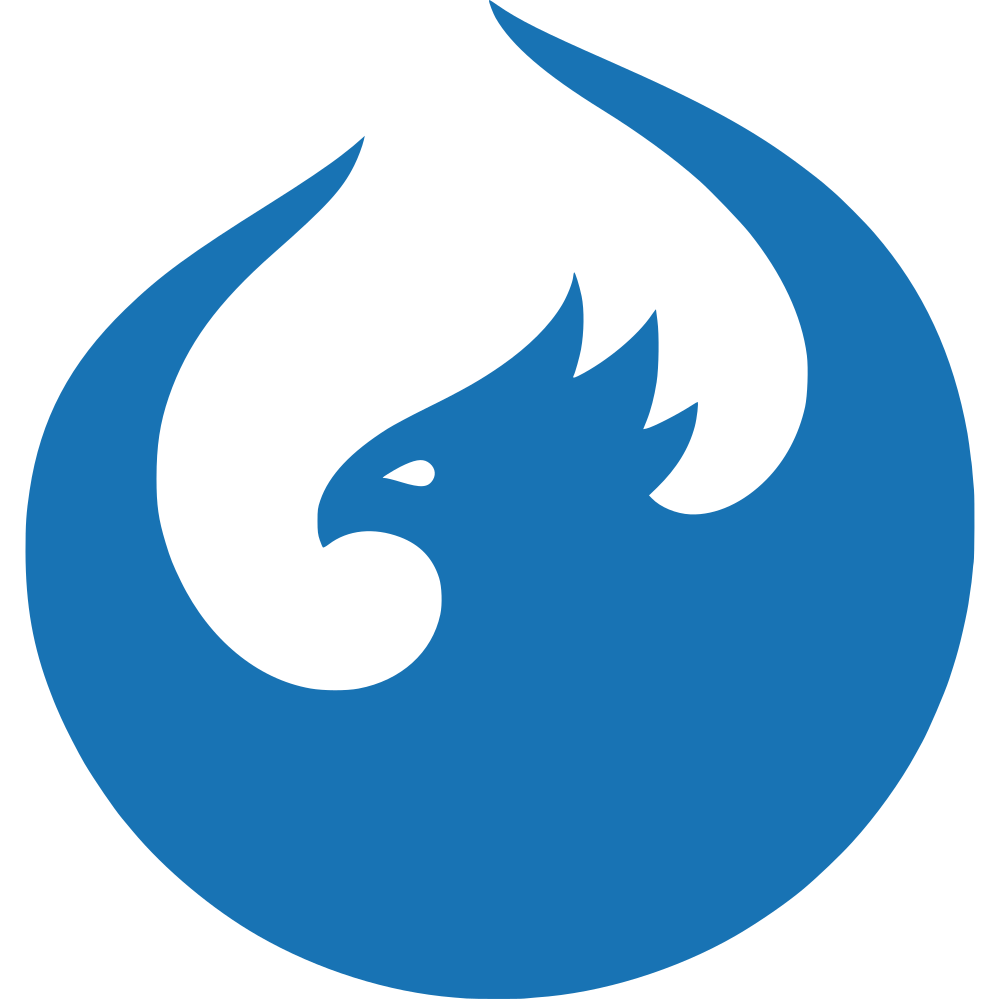

Under Construction
Bridging technology and real-world impact.
Projects

SAP Cloud ERP Launchpad
A free browser extension for SAP Cloud ERP systems and Fiori Applications — boost your productivity as developer, consultant, or end-user.
View project
Spring Boot + Olingo OData Blueprint
The first publicly documented example of a fully functional OData service built on a Spring Boot application using Apache Olingo — a blueprint that became the reference for several Java developers bridging the OData standard with the Spring ecosystem.
View on GitHub
Patent
Open Source Contributions
Kyma 2.18.0
Kyma is an open-source cloud-native application runtime that extends SAP BTP and Kubernetes with enterprise-grade tools for building, connecting, and operating microservices and serverless functions. Contributed to the Kyma 2.18.0 release as a committer.
View release & committers
UI5 Web Components
UI5 Web Components is SAP's open-source library of enterprise-grade UI components based on the Web Components standard — the building blocks behind SAP Fiori applications. Contributed to the project.
View on GitHub

OpenUI5
OpenUI5 is SAP's open-source JavaScript UI framework for building enterprise-grade web applications following the SAP Fiori design language. It provides a rich set of UI controls, data binding, routing, and internationalisation support — powering thousands of SAP applications worldwide. Fixed bugs and committed code to the project.
View on GitHub
Gardener
Gardener is a CNCF project that delivers Kubernetes-as-a-Service across any cloud provider or on-premise infrastructure — managing thousands of Kubernetes clusters at scale for organizations worldwide. Fixed a bug in the apiserver-storage-details Plutono monitoring dashboard where queries used deprecated metric labels removed in Kubernetes 1.33, and resolved a UI issue where the panel appeared empty before selecting an API server or after a page reload.
View on GitHub

Aurora Dashboard
Aurora Dashboard is a comprehensive management interface for OpenStack-based cloud architectures, focused on efficiently handling cloud assets. It allows users to manage resources like servers, networks, volumes, and other cloud components — enabling teams to easily provision, configure, and scale assets across SAP's cloud infrastructure. Contributed to the project.
View on GitHub
SAP Architecture Center
The SAP Architecture Center provides solution reference architectures, best practices, and guidelines that help businesses adopt SAP solutions and turn data into valuable business insights. It serves as the authoritative source for enterprise architects working with SAP BTP, S/4HANA, and the broader SAP ecosystem. Contributed to the project by improving content and tooling.
View on GitHub

Greenhouse
Greenhouse is an open-source cloud operations platform built on Kubernetes, designed to help platform teams manage and operate large-scale cloud infrastructure across multiple clusters and environments. It provides a unified control plane for compliance, security, monitoring, and observability — integrating with Prometheus, OpenTelemetry, and Kubernetes-native tooling to give operators a single pane of glass for cloud operations. Contributed to the project.
View on GitHub

Elektra
Elektra is an opinionated OpenStack Web UI for consumer self-service and operations, built for SAP's cloud infrastructure. It provides a clean, user-friendly interface over OpenStack APIs, enabling teams to manage compute, networking, storage, and identity resources without needing direct CLI access. Contributed to the project.
View on GitHub
TensorFlow
TensorFlow is Google's open-source end-to-end machine learning platform — one of the most widely used frameworks for building and deploying ML models at scale, powering production AI workloads across research institutions and enterprises worldwide. Fixed a performance regression introduced in TF 2.21+ where XLA einsum gradient ops using ellipsis notation caused large register spills (~50–90 KB vs ~8–84 B) when
jit_compile=True, by resolving ... to concrete axis labels so XLA could consistently lower gradient ops to its efficient dot/gemm path.
View on GitHub
Blogs
Calling a SOAP API using Postman
Building an OData Service with a Spring-Boot Java Application using Olingo – Part I
Building an OData Service with a Spring-Boot Java Application using Olingo – Part II
Building an OData Service with a Spring-Boot Java Application using Olingo – Part III (Payloads and Custom Logic)
How to Change UI5 Version in SAP Build Code
Keyboard Shortcuts for Fiori Elements Applications
How to Copy Bank Statement Data from Excel to SAP S/4HANA using the Manage Bank Statement App
Future of Electronic Bank Statement Processing in SAP S/4HANA Cloud — Release of 4X8
Can a Free Chrome Extension Transform Your SAP Cloud ERP Experience?
SAP Cloud ERP Launchpad Extension v2.2: Fiori App Groups & Multi-Language Support Are Here